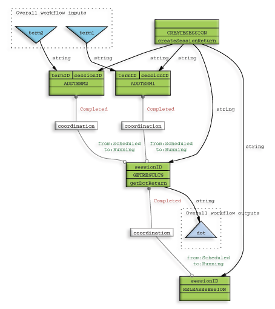

Version 0.1.beta4, 12th June 2003, tmo@ebi.ac.uk
This document describes some of the features of the Taverna project that make it particularly suitable for use in the general eScience community. This feature set is far from exhaustive, and merely highlights some of the more interesting corners of the system.
Taverna provides support for stateful web services or, in the future, grid services (same difference really) by two language features. Specifically, the coordination constraint mechanism and implicit iteration support.
Stateful services are characterized by the additional requirement to comprehend and represent the pattern of interactions that will allow the service to perform its function. For example, a typical design pattern is the factory model. In this model the first call is to create some server side session, subsequent calls manipulate this session (in which the statefulness of the service is encapsulated) and a final call releases the session, allowing the server to release any resources that the session may have been holding.
In this case, we cannot rely purely on the data link driven invocation of services. It makes sense that we should only call the release operation once we have finished with the service instance, but it is unlikely that, say, the final invocation of a 'get results' operation will pass data to the release operation. In order to express these kinds of constraints the SCUFL language has the notion of coordination constraint definitions. These take the form of statements such as 'processor A may not transition from state SCHEDULED to state RUNNING until processor B has attained state COMPLETED'. By this mechanism, it is possible to coordinate the various operations that make up the functionality of a stateful service.
The example to the right shows a typical use of the factory pattern. The CreateSession processor is called immediately, this creates a session on the server and passes a reference to this session to the other processors in the workflow. The two AddTerm processors accept overall workflow inputs and add data to the session; these do not require constraints as they can only run after the session id is present (so there is a direct data link). The GetResults processor passes some view on the session state to the workflow output - this should only run when the two AddTerm processors have completed, so there are two data constraints present to ensure this. In turn, the ReleaseSession processor should only run once the results have been fetched, so, again, there is a coordination link back to the GetResults processor.
The available states for transition control are SCHEDULED, RUNNING, COMPLETED, FAILED and ABORTED, although at present the enactor implementation only allows you to do the type of coordination constraint shown to the right, that of 'block from SCHEDULED to RUNNING until something else has COMPLETED'. In the future we will implement this in a more general way, in particular to allow automatic failover between equivalent processors.
 Although not an essential feature, the implicit iteration support makes it very simple to use factory based services. One example of such a service is the Gene Ontology Visualization service at the European Bioinformatics Institute[1] (EBI). Simply, the interface allows you to create a session, add a Gene Ontology[2] (GO) term to the session and to get the current heirarchy containing all the terms that have been added up to that time. An additional method informs the server that it may release the resources used, in this case connections to an Oracle instance. In order to be able to add multiple data items, say from a stateless service that has returned an array of GO terms, the implicit iteration support can be used to allow the array to be passed directly to the operation taking a single term; the Taverna enactor extensions will interpret this as meaning that it should repeatedly invoke the 'add term' method on each of items in the array, expanding the array into a series of calls with items of the same type but lower dimensionality.
The intention with the SCUFL language was to simplify the process of creating workflows for eScience by making the language granularity and concepts as close as feasibly possible to those that a potential user of the system would already be thinking in. So, if the scientist would see something as a single operation, we have tried to make this appear in the language as a single processing entity. In instances where this is not possible to do generally we have chosen to make service specific processor types, sacrificing theoretical purity for greater ease of use and practicality - this is most obvious in the Soaplab[3] processor task; you could call Soaplab as a series of WSDL[4] based tasks, but it would be extremely awkward by comparison, and counterintuitive to someone who thinks of, say, the EMBOSS[5] toolset as containing atomic tools rather than APIs they would expect to have some detailed interaction with.
As previously mentioned under support for stateful services, the Taverna extensions to the Workflow Enactment Engine (enactor) allow a certain limited range of automatic transformations on data in between services where the service output and the service input types do not match. Specifically, if the data input expects type 'a' and the output of the previous processor is providing type 'a[]', an array of items of type 'a', Taverna will automatically iterate over the input array, invoking the service with each possible combination of inputs and packaging the outputs into a new array, effectively converting a service that has type 'a->b' to one with type 'a[]->b[]'. This is the simple case.
Where there is more than one input the current algorithm is to compute the orthogonal join of all the input data to derive the list of sets of inputs to the service and then iterate over this list, packaging any results into arrays at the other end. In the example of the stateful GO service, one input to the 'add term' method was the session identifier, the other being the term accession number to add; the Taverna iteration support created a trivial join between these data sets to produce a list of inputs, all of which had the same single session identifier and with one row per element in the term accession array. Had there been an array of session identifiers as well then the service would have been invoked using all possible combinations of inputs, and would have had the effect of adding all terms to all sessions specified.
It is possible to incorporate a workflow inside another workflow. This is implmented in Taverna by creating a new processor type where the inputs and outputs of the processor are derived from the overall workflow sources and sinks of the workflow contained within. The current implementation runs a new enactor invocation for the nested workflow, although this is an implementation detail and might well change in the future. This allows the creation of complex building blocks which may then be used analogously to function or object libraries in classical programming languages.
As part of the myGrid[6] project, Taverna is developed in the spirit and released under the terms of the LGPL[7]. Our development process is entirely open and visible from the SourceForge[8] project module 'taverna', and all software thus produced is freely available. Our reference implementation is well documented and written in Java[9] both to make our lives easier and to allow a level of platform independance - elements of Taverna use features that are present only in Java 1.4.1 but with that caveat aside it should operate on any platform with a suitable Java Virtual Machine (JVM).
The reference implementation includes the core object model to represent a SCUFL workflow and its component entities, a set of parsers to load this model from the XML[10] form of the language, various basic view classes such as a view that exports the XML form and one that shows the workflow as a Dot[11] file. In addition, a collection of swing user interface components is provided to allow rapid development of applications using the code object model, and a sample editor application, the Scufl Workbench is included, both as a demonstrator of the software components and as a real world tool for creating, editing and enacting workflows. In order to enable invocation of SCUFL workflows there is a set of extensions to the enactor to allow it to handle SCUFL without further modification. The user guide has more information on how to install and configure the enactor with Taverna support enabled, and the Scufl Workbench includes a preconfigured version of the enactor to allow direct invocation of workflows during their development.
[1] The European Bioinformatics Institute - http://www.ebi.ac.uk
[2] The Gene Ontology Consortium - http://www.geneontology.org
[3] Soaplab - http://industry.ebi.ac.uk/soaplab
[4] Web Service Description Language - http://www.w3.org/TR/wsdl
[5] European Molecular Biology Open Software Suite - http://www.emboss.org
[6] The myGrid Project - http://www.mygrid.org.uk
[7] GNU Lesser Public License -http://www.gnu.org/copyleft/lesser.html
[8] SourceForge - http://www.sourceforge.net
[9] Java - http://java.sun.com
[10] eXtensible Markup Language - http://www.w3.org/XML
[11] Dot, a component of GraphViz from AT&T - http://www.research.att.com/sw/tools/graphviz